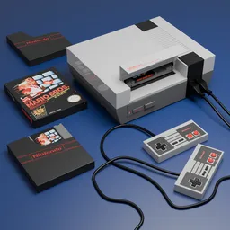
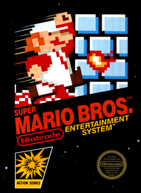
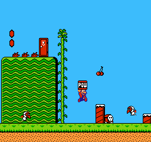
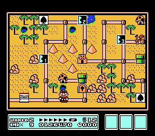
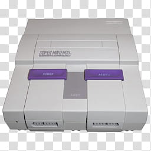
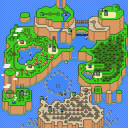
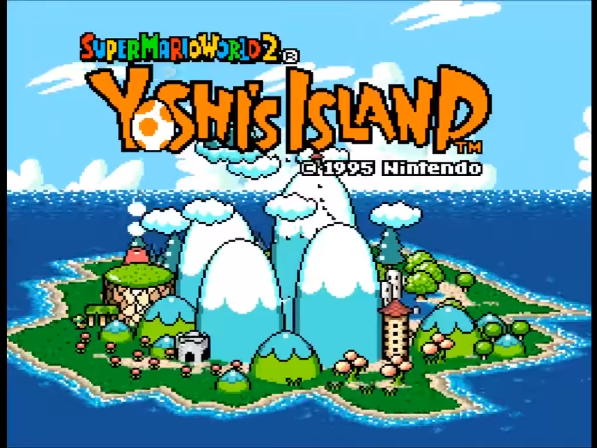

Bem-vindo ao Mundo do Mario!
Os jogos do Mario para Nintendinho (NES) e Super Nintendo (SNES) marcaram gerações e definiram o gênero de jogos de plataforma.

A Era do Nintendinho (8-Bits)

Em meados da década de 1980, a indústria dos videogames tentava se reerguer da grande crise de 1983. Foi nesse cenário que o Nintendo Entertainment System (NES) — carinhosamente conhecido no Brasil como Nintendinho — transformou o entretenimento digital. Em 1985, o lançamento de Super Mario Bros. redefiniu os padrões do gênero de plataforma ao apresentar rolagem lateral fluida, fases dinâmicas, física precisa e uma infinidade de segredos escondidos que incentivavam a exploração.
Curiosidade: Por limitações de memória no NES, os arbustos e as nuvens do jogo Super Mario Bros. usam exatamente o mesmo desenho (sprite), mudando apenas a cor (verde para arbustos e branco/azul para nuvens)!
Destaques do NES:
- Super Mario Bros. (1985): O marco zero da cultura pop moderna. Apresentou ao mundo o Reino dos Cogumelos (Mushroom Kingdom), o vilão Bowser e o objetivo clássico de resgatar a Princesa Peach. Estabeleceu mecânicas fundamentais como os power-ups (Super Cogumelo e Flor de Fogo).
- Super Mario Bros. 2 (1988): Conhecido por sua jogabilidade atípica no Ocidente (adaptação do jogo Yume Kōjō: Doki Doki Panic). Permitia escolher entre quatro personagens com habilidades únicas — Mario, Luigi, Toad e Princesa Peach — e substituiu a derrota tradicional de inimigos por uma mecânica de arrancar e arremessar objetos do chão.
- Super Mario Bros. 3 (1990): Considerado uma das maiores obras-primas da era 8-bits. O título introduziu o mapa interativo de mundos (Overworld), minijogos, inventário de itens e transformações memoráveis, como a habilidade de voar com a Super Folha (Super Leaf).



A Era do Super Nintendo (16-Bits)

Com a chegada dos anos 1990, a quarta geração de consoles deu um salto evolutivo inesquecível. O Super Nintendo Entertainment System (SNES) elevou a franquia do encanador a um novo patamar técnico e artístico. Graças ao poder do chip de 16-bits, aos chips auxiliares e às capacidades gráficas avançadas do sistema, os jogos do Mario ganharam paletas de cores vibrantes, sprites incrivelmente detalhados, trilhas sonoras orquestradas em sintetizadores memoráveis e a estreia de um dos companheiros mais amados dos videogames: o carismático dinossauro Yoshi.
Destaques do SNES:
- Super Mario World (1990): Lançado ao lado do console, tornou-se um dos jogos mais vendidos da história e um clássico absoluto do gênero de plataforma. O título apresentou a Dinosaur Land (Terra dos Dinossauros), um vasto mapa com 96 saídas (exits) e segredos interconectados — como o misterioso Star World. Além de introduzir o Yoshi, que oferecia novas mecânicas de montaria e habilidades ao comer inimigos, o jogo consagrou a Pena (Caped Feather), que permitia ao Mario planar pelos céus.
- Super Mario Kart (1992): O marco inicial de uma das franquias mais lucrativas e influentes da Nintendo. Utilizando a revolucionária tecnologia Mode 7 do SNES — capaz de simular rotação e escala em planos 2D para criar um efeito de profundidade 3D —, o jogo combinou corridas competitivas com o uso estratégico de itens (como cascos, bananas e raios) e um divertido modo de batalha entre amigos.
- Super Mario World 2: Yoshi's Island (1995): Uma obra-prima visual que levou o hardware do SNES ao seu limite prático com o auxílio do chip Super FX2. Adotando um estilo de arte único desenhado à mão (que lembrava giz de cera e lápis de cor), o jogo inovou ao inverter os papéis: o jogador assume o controle de diferentes dinossauros Yoshi em uma missão de escolta para proteger o Bebê Mario e reencontrá-lo com seu irmão Luigi, enfrentando o jovem Bowser e o mago Kamek.



Bloco de Supresa
Clique na caixa para pegar um item especial do Mario!
O que vai sair da caixa?
Área do Fã
Digite seu nome para receber uma saudação especial:
Esperando seu nome...
Você gosta dos jogos clássicos?
Deixe sua curtida para o Mario!
Total de curtidas: 0